Section 2.1: Tables and Graphs for Qualitative Data
Learning Objectives
1.Calculate and understand frequency and relative frequency.
2.Create frequency and relative frequency tables.
3.Create bar graphs, pie charts, and pareto charts.
4.Create side-by-side bar graphs.
Recall that qualitative variables are names of a characteristic of the individual. These could be nominal (name only) or ordinal (when there is a natural order). This section discusses how to visualize qualitative data. Sections 2.2 and 2.3 will cover visualization of quantitative data.
When working with qualitative variables, we consider how often each observation appears in the data. This called the frequency of the observation. The relative frequency is the proportion or percent the observation appears in the data.
Frequency and Relative Frequency Tables
Definition 1
The frequency of an observation is the number of times it occurs in the data.
The Relative Frequency of an observation is the number of times it appears in the data (the frequency), divided by the total number of observations in the data set (the sum of all frequencies). Relative Frequency =Frequency/Total. This can be expressed as a fraction, a decimal, or a percent.
Example 1: What is your favorite type of pizza?
A survey asked respondents to identify their favorite pizza. The sample of 40 responses is listed in Table 1. Who are the individuals? What type of data was collected? Find the frequency and relative frequency of the category “Pepperoni”.
Table 1: Favorite Pizza | ||||
|---|---|---|---|---|
Pepperoni | Cheese | Pepperoni | Other | Veggie |
Pepperoni | Veggie | Pepperoni | Other | Other |
Cheese | Pepperoni | Hawaiian | Cheese | Other |
Veggie | Other | Other | Veggie | Hawaiian |
Pepperoni | Veggie | Hawaiian | Pepperoni | Other |
Hawaiian | Pepperoni | Pepperoni | Pepperoni | Pepperoni |
Other | Cheese | Hawaiian | Other | Veggie |
Cheese | Hawaiian | Other | Pepperoni | Hawaiian |
Photo by Alan Hardman (opens in a new tab) on Unsplash (opens in a new tab)
Solution: First, note that in this example the individuals are the people who responded to the survey question. The variable is “Favorite Pizza”, which is qualitative and nominal because it is a name only. The data are the 40 responses.
The category “Pepperoni” has frequency 12, since “Pepperoni” is listed 12 times in the data set. (Go ahead, count!)
The relative frequency of “Pepperoni” is 12 divided by 40.
Relative Frequency = 12/40=0.3=30%, expressed as a fraction, a decimal, and a percent. Usually, you will be asked to express your answer in only one way.
Definition 2
A Frequency Table is a table that lists each category appearing in the data and the number of times it appears (the frequency).
A Relative Frequency Table is a table that lists each category appearing in the data and the relative frequency of the category.
Example 2: What is your favorite type of pizza?
Use the data from Table 1 to create a frequency and relative frequency table for the variable “Favorite Pizza”.
Solution:To make a frequency table, first list each category and the total in the first column.
List of each category
Favorite Pizza | Frequency |
|---|---|
Pepperoni | 12 |
Cheese | |
Veggie | |
Hawaiian | |
Other | |
Total |
We counted this in example 1
Next, count the number of times each category occurred. Fill in the frequencies in the frequency column and then add them up to find the total.
Favorite Pizza | Frequency |
|---|---|
Pepperoni | 12 |
Cheese | 5 |
Veggie | 6 |
Hawaiian | 7 |
Other | 10 |
Total | 40 |
The sum of all frequencies is 40
This is the frequency table. Now to make a relative frequency table, we need to divide each frequency by the total. Add another column next to the frequency column. For this example, let’s leave the relative frequencies as decimals. The first entry is 12 pepperoni, divided by the total, which is 40, so the relative frequency of pepperoni is 12/40=0.3. The relative frequency for the category “cheese” is 5/40 = 0.125. Continue to fill in the rest of the categories.
Favorite Pizza | Frequency | Relative Frequency |
|---|---|---|
Pepperoni | 12 | 12/40 = 0.3 |
Cheese | 5 | 5/40 = 0.125 |
Veggie | 6 | 6/40 = 0.15 |
Hawaiian | 7 | 7/40 = 0.175 |
Other | 10 | 10/40 = 0.25 |
Total | 40 | 40/40 = 1.000 |
Important Point! The sum of the relative frequency column will always be either 1 or 100%
We don’t usually leave the fractions in the relative frequency column, but here they are left to remind the reader how the decimals are calculated. Note that the sum of the frequencies is the total, and the sum of the relative frequencies is 1. If relative frequency had been given as percentages, the total of the relative frequencies would have been 100%.
Remember, sum of the relative frequency column is always 1, or 100%. Sometimes, when using decimals that have been rounded, the total will be 0.999, or 1.0001. These numbers are equal to 1, when rounded off at the appropriate place.
Creating frequency and relative frequency tables is an easy task when you are using technology. In this course, we will use STATBELT Utility- the Statistical Basics Exploratory Learning Tool, to assist with these tasks. STATBELT Utility runs in your web browser, so there is nothing to install. You can open STATBELT Utility (opens in a new tab).
Using STATBELT Utility to make Frequency and Relative Frequency Tables
To create a frequency or relative frequency table in STATBELT Utility:
1.Type, paste, or import the data into one column, and type a name for the column in its heading.
2.Follow Descriptive Statistics → Frequency Tables.
3.For “Table type,” choose “One variable,” then choose your column for “Variable.”
4.Make sure that “Relative frequency” is checked. “Percent” and the cumulative columns are optional.
5.Choose an “Order of categories” if you have an order preference. *
6.Click “Show table in a new window.”
*The “Order of categories” options-
“Alphabetical or numerical” puts the categories in alphabetical order, “Largest frequency first” puts them in order by frequency, “Order of first appearance” keeps the order of the column of data, and “Choose my own order” lets you move categories up or down (useful for ordinal data such as Poor, Good, Great).
*The table opens in its own window. Click “Copy table as text” to paste it into a document, or “Copy image” or “Save PNG” to keep a picture of it.
Example 3: Using STATBELT Utility to make a frequency table for Pizza data.
Use STATBELT Utility and the data from Table 1 to create a frequency and relative frequency table for the variable “Favorite Pizza.” You can type the data into STATBELT Utility, or copy and paste it from the Favorite Pizza data file (opens in a new tab). (If you type the data or copy it from the table, make sure to put the data into one column. If you open the linked file, the data are already organized in one column, which will make it easier to copy and paste it into STATBELT Utility or Microsoft Excel.)
Solution:Click on the link to the data and copy the values in the column (not the heading). Open STATBELT Utility, click in row 1 of Column A, and paste. Then type a name for the column, such as “Favorite Pizza,” in the column heading.
Table 1: Favorite Pizza | ||||
|---|---|---|---|---|
Pepperoni | Cheese | Pepperoni | Other | Veggie |
Pepperoni | Veggie | Pepperoni | Other | Other |
Cheese | Pepperoni | Hawaiian | Cheese | Other |
Veggie | Other | Other | Veggie | Hawaiian |
Pepperoni | Veggie | Hawaiian | Pepperoni | Other |
Hawaiian | Pepperoni | Pepperoni | Pepperoni | Pepperoni |
Other | Cheese | Hawaiian | Other | Veggie |
Cheese | Hawaiian | Other | Pepperoni | Hawaiian |
To create the table, follow Descriptive Statistics → Frequency Tables, then select “Favorite Pizza” for “Variable.” I left the order as “Alphabetical or numerical,” but you can choose a different order. Then click “Show table in a new window.”
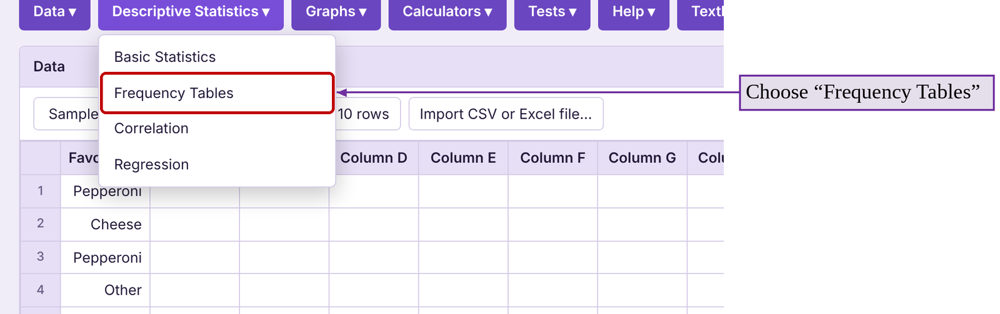
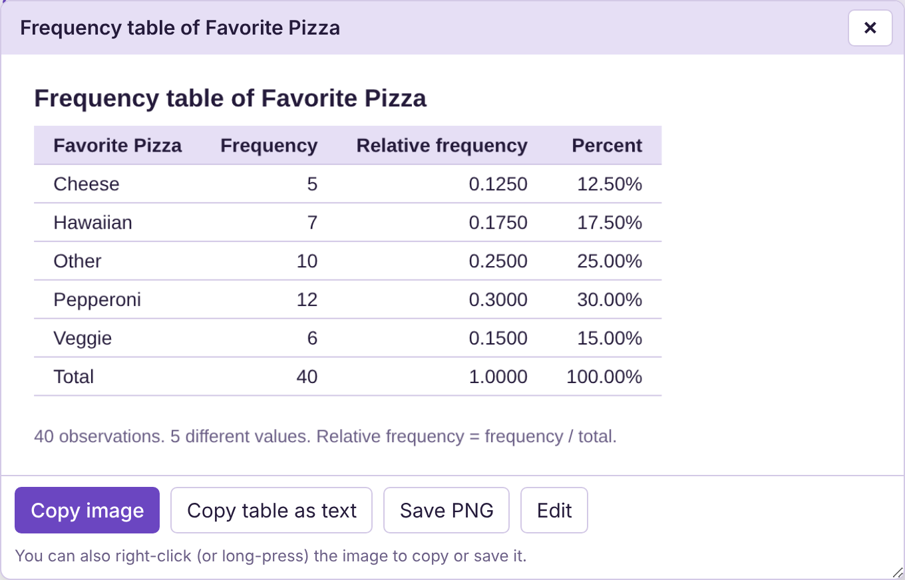
Figure 2.2: Frequency table for Favorite Pizza.
Since we will continue to use this data, now is a good time to remind you (and explain how) to save your data.
STATBELT Utility- Saving Data
STATBELT Utility does not keep your data after you close the page, so save your data before you leave. Select Data → Import or export data, then click “Export data as CSV.” The file is saved to your computer. To open it later, select Data → Import or export data and drag the file onto the page, or click “Import CSV or Excel file…” above the data table.
Bar Graphs
Now that we have the data summarized by frequency, we can use this information to create a bar graph or pie chart. This can be done using STATBELT Utility or other technology more easily than by hand. Displaying the data using graphs will make the data easier to understand.
Definition 3
A Bar Graph is a chart that lists categories on one axis and the frequencies or relative frequencies on the other axis. Rectangles are drawn for each category where the height of the rectangle is determined by the frequency or relative frequency of the category.
Example 4: Make the Pizza Data into a Bar Graph
Make a frequency bar graph for the “Favorite Pizza” data in Table 1.
Solution:We have previously entered the raw data into a column in STATBELT Utility with the variable name “Favorite Pizza.” Select Graphs → Bar graph.
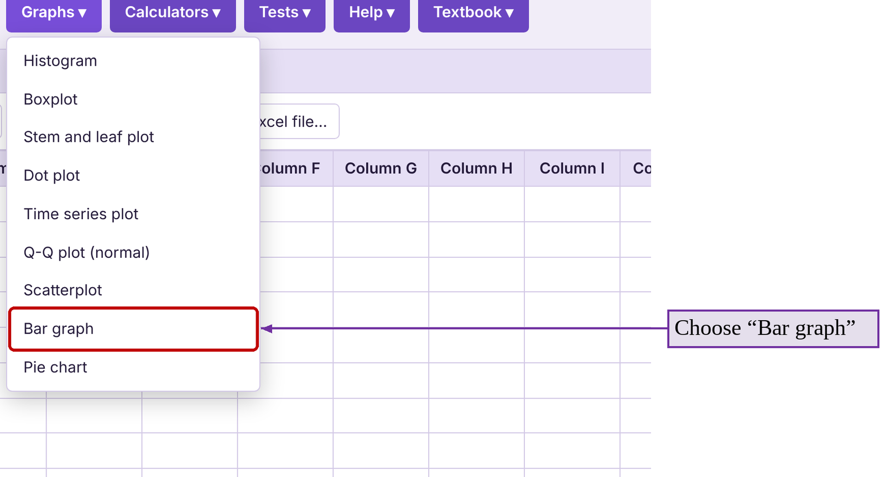
(1) Select “Favorite Pizza” for “Column”
(2) select “Frequency” for “Bar height”
(3) check “Show the value above each bar”
(4) leave “Order of bars” as “Alphabetical / numerical,” then
(5) click “Open graph in a new window.” The result is figure 2.3.
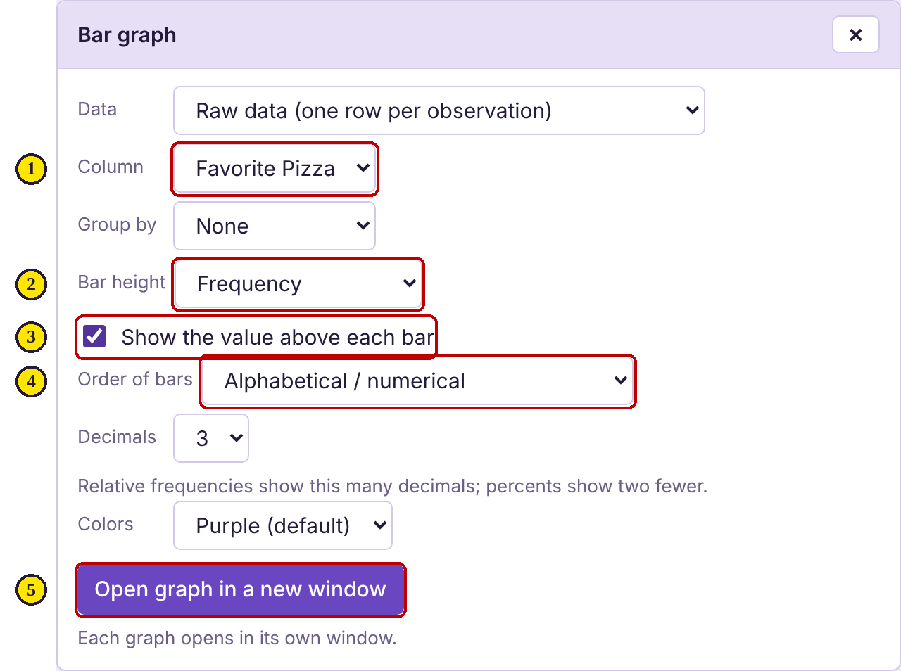
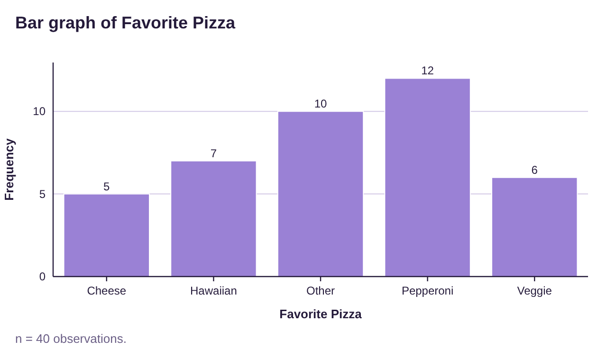
Figure 2.3: Frequency bar graph for favorite pizza data.
Notice that the value above the bars for each category is the frequency we calculated in example 2. Also note that the bars all have the same width, and that the bars are not touching. These are properties of all proper bar graphs.
Here are the steps for making bar graphs in STATBELT Utility along with descriptions of the options that are available.
Using STATBELT Utility to make Bar Graphs from Data
To create a Bar Graph in STATBELT Utility when you have raw data:
1.Enter or import the data.
2.Follow Graphs → Bar graph.
3.Choose your column for “Column,” and for “Bar height” select Frequency or Relative frequency.
4.Optional-
•“Order of bars”- Allows you to choose the order of the bars left to right.
•“Show the value above each bar”- Labels each bar with its frequency or relative frequency.
•“Decimals” and “Colors”- Change the number of decimals shown and the color of the bars.
•The graph opens in its own window, where you can copy it or save it as a picture.
5.Click “Open graph in a new window.”
Example 5: Make the Pizza Data into a Relative Frequency Bar Graph
Use the data in Table 1 for “Favorite Pizza” to create a bar graph with relative frequency as the vertical axis.
Solution:The process is identical to example 4, with one exception. Instead of selecting “Frequency” for “Bar height,” you select “Relative frequency.”
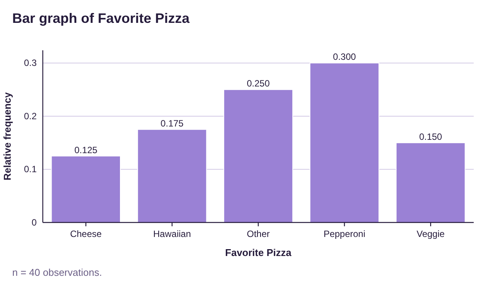
Figure 2.4: Relative frequency bar graph for favorite pizza data.
Notice that the shape of the relative frequency bar graph (figure 2.4) looks the same as the shape of the frequency bar graph (figure 2.3) but the value above the bars has changed to the relative frequency values we calculated in example 2. The shape is the same because only the scale on the vertical axis has changed.
Since we are using categories, we can arrange the bars of the graph in any order that we would like. Sometimes, we want to see the most frequent categories grouped together. For example, you might want to identify the most important concerns people have about their community. If we arrange the columns from highest to lowest frequency, we have created a Pareto chart.
Definition 4
A Pareto Chart is a bar graph where the categories are arranged from the highest frequency to the lowest frequency from left to right.
Example 6: Make the Pizza Data into a Pareto Chart
Use the “Favorite Pizza” data from Table 1 to make a Pareto chart.
Solution:Using STATBELT Utility, the process is the same as example 4. The only change is that for “Order of bars,” you choose “Descending frequency (Pareto chart).” This will put the categories in order from the highest frequency down to the lowest frequency moving from left to right on the graph.
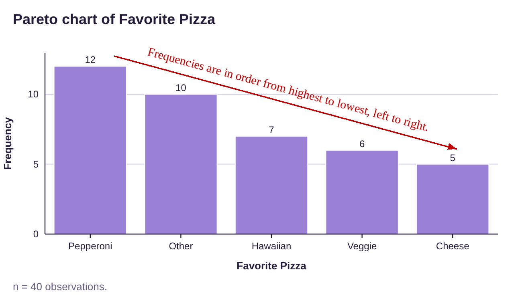
Figure 2.5: Pareto chart for favorite pizza data.
Note that the categories are now listed in decreasing order from the most popular down to the least popular. Obviously, Pepperoni is the most popular. Veggie and cheese will probably be the last slices taken from the table at your party.
Pie Charts
Another common graph that is familiar and is appropriate to use with qualitative data is the pie chart.
Definition 5
A Pie Chart is a circle divided into sectors, one sector for each category, such that the sector for each category is proportional to its frequency.
Computing the size of each sector (slice of the pie) is complicated. A full circle contains 360°, and the degree measure of each sector must be computed using the relative frequency of the category. After computing the angles, you must draw the angles by hand. In most situations, that would require the use of protractor. Making pie charts by hand takes more work than bar graphs. Fortunately, we are going to use technology that will complete the computations and drawing for us.
Using STATBELT Utility to make Pie Charts from Data
To create a Pie Chart in STATBELT Utility when you have raw data:
1.Enter or import the data.
2.Follow Graphs → Pie chart.
3.Choose your column for “Column.”
4.Optional-
•“Show”- Choose Frequency, Relative frequency, or Percent for the slice labels.
•“Order of categories”- Allows you to choose the order of categories.
•“Decimals” and “Colors”- Change the decimals shown and the slice colors.
•Check “Show the values on the slices” to label each slice.
5.Click “Open chart in a new window.”
Example 7: Make the Pizza Data into a Pie Chart
Use the data from Table 1 to create a Pie chart using relative frequency for the variable “Favorite Pizza”.
Solution:Return to STATBELT Utility with your pizza data. Select Graphs → Pie chart, then choose “Favorite Pizza” for “Column.”
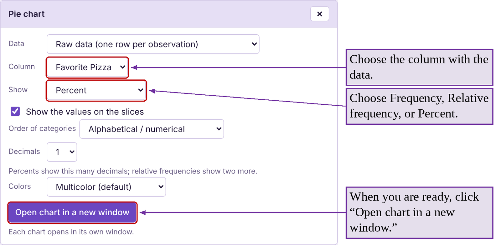
For “Show,” choose “Percent” and check “Show the values on the slices.” The “Order of categories” option allows you to select the order of the categories in the chart. I left it as “Alphabetical / numerical,” which means alphabetical order of the categories as you move clockwise around the circle. Finally, click “Open chart in a new window.” The pie chart is shown in figure 2.6.
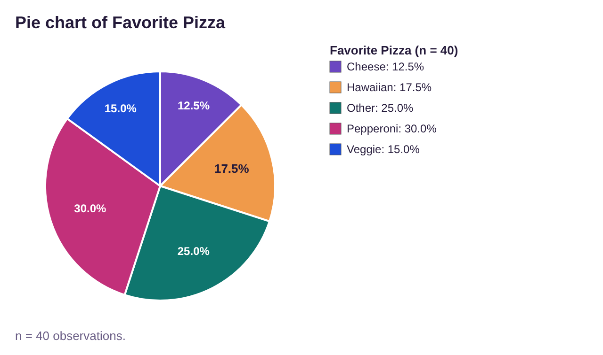
Figure 2.6: Pie chart for favorite pizza data.
STATBELT Utility has automatically calculated the correct size for each category, saving us from having to do it by hand. Thank you, Stat-Man!
Sometimes, instead of a long column of data, the data are summarized in a table. STATBELT Utility can be used to create bar graphs, Pareto charts, and pie charts in this situation. For example, if we wanted to make a bar graph, we select Graphs → Bar graph, then choose “Summarized frequencies from the spreadsheet” for “Data.”
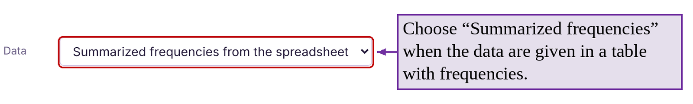
Example 8: Creating bar graphs and pie charts from summarized data.
The data that is summarized in Table 2 was from a student survey about tattoos. Create a relative frequency bar graph and a pie chart for the summarized data.
Table 2: Summarized Tattoo Data | |
|---|---|
What best describes you? | Frequency |
I have no tattoos | 59 |
I have one tattoo | 13 |
I have more than one tattoo | 35 |
I have had tattoos removed | 5 |
Solution:First, type or copy the table into STATBELT Utility, with the categories in Column A and the frequencies in Column B. Long category names are shortened on the graph, so we typed short names such as “No tattoos” and “One tattoo.”
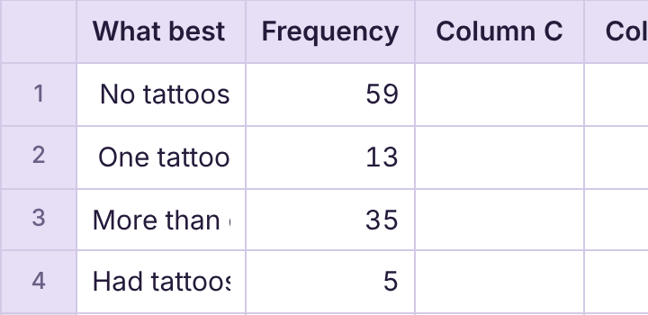
Next, select Graphs → Bar graph and choose “Summarized frequencies from the spreadsheet” for “Data.” Select “What best describes you?” for “Categories” and check the “Frequency” column under “Frequency columns.” For “Bar height,” select “Relative frequency.” For “Order of bars,” select “Order first seen in the data.” Check “Show the value above each bar” and click “Open graph in a new window” when you are ready.
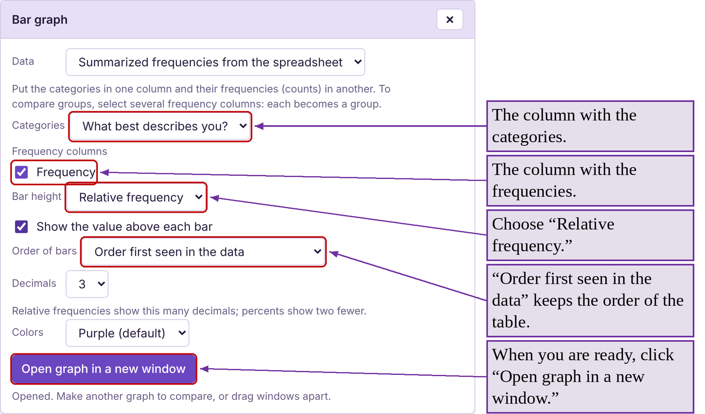
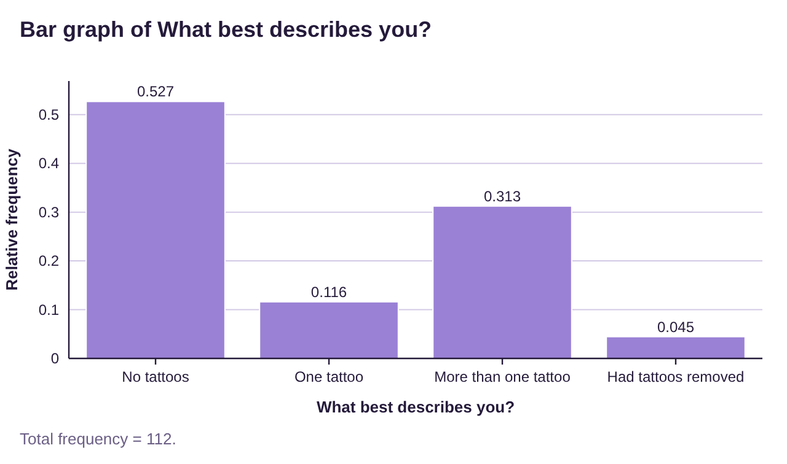
Figure 2.7: Relative frequency bar graph for tattoo data.
To make the pie chart, follow Graphs → Pie chart and choose “Summarized frequencies from the spreadsheet” for “Data.” The options for pie charts are the same as for bar graphs. See the bar graph in figure 2.7 and the pie chart in figure 2.8.
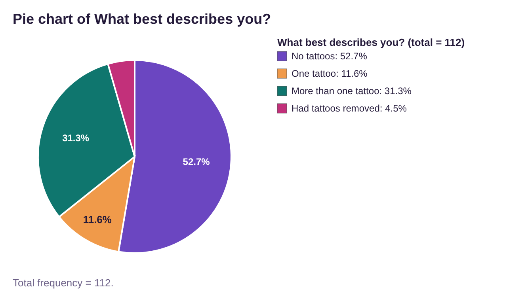
Figure 2.8: Pie chart for tattoo data.
Side-by-Side and Stacked Bar Graphs
Often, we want to know if two qualitative variables are related. One way to visualize two or more qualitative variable is to use a contingency table, or a two-factor table and a side-by-side bar graph.
Definition 6
A Contingency table is a data table where each row represents categories for one variable, while the columns represent categories of another variable. The cell contains the frequency of observations with both the row and column characteristic.
A Side-by-side bar graph is a bar graph where each qualitative factor is split into two or more bars, each representing categories of the other variable.
Example 9: Vaccination Status and Ethnicity Side-by-side Frequency Bar Graph
The data that is summarized in Table 3 was from a student survey in fall 2021 about vaccination status and ethnicity. Find the row and column totals and make a side-by-side bar graph displaying the vaccination status of each race/ethnicity included in the table.
Table 3: Vaccination Status by Race or Ethnicity | |||||
|---|---|---|---|---|---|
Vaccination Status | Asian | Black | Hispanic | White | None of these |
Vaccinated | 13 | 11 | 34 | 36 | 5 |
Unvaccinated | 3 | 9 | 14 | 17 | 6 |
Solution:To copy the original raw data into STATBELT Utility, open the vaccination data file (opens in a new tab). Copy both columns of data (not the headings) and paste them into row 1 of Column A. Then type “Status” and “Ethnicity” as the names of the two columns. (You can also download the file as a CSV file and import it, which brings in the column names automatically.)
To make the raw data into a contingency table, like the one given above, follow Descriptive Statistics → Frequency Tables and choose “Two variables (two-way or contingency table)” for “Table type.”
Next select “Status” for the “Row variable” and “Ethnicity” for the “Column variable.” To list the ethnicities in the same order as Table 3, choose “Choose my own order” for “Order of columns,” then click the ▼ arrow next to “None of these” until it is at the bottom of the list. There are other options that you can ignore for now. We will discuss them later in the course. For now, simply click “Show table in a new window.”
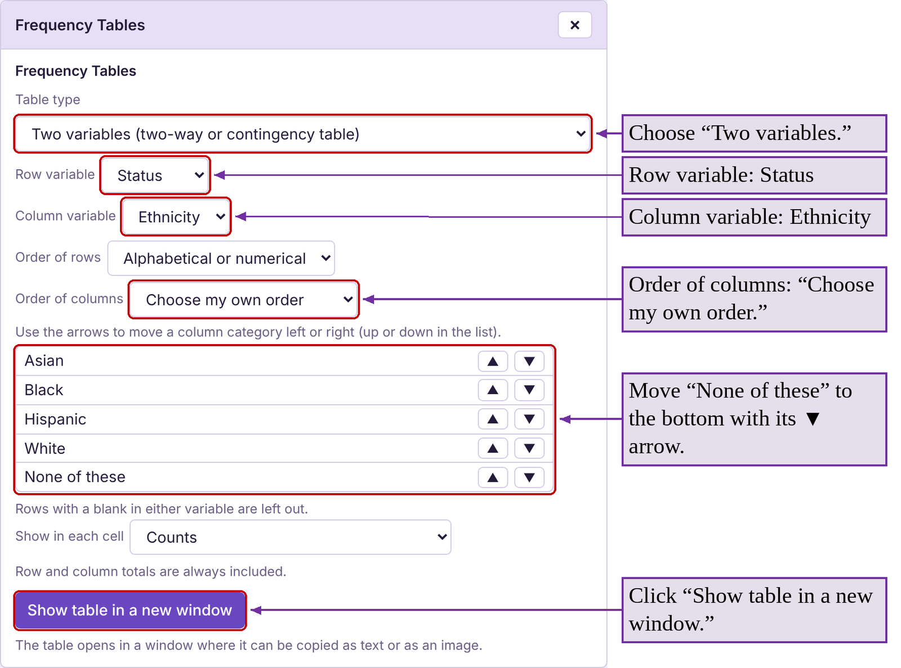
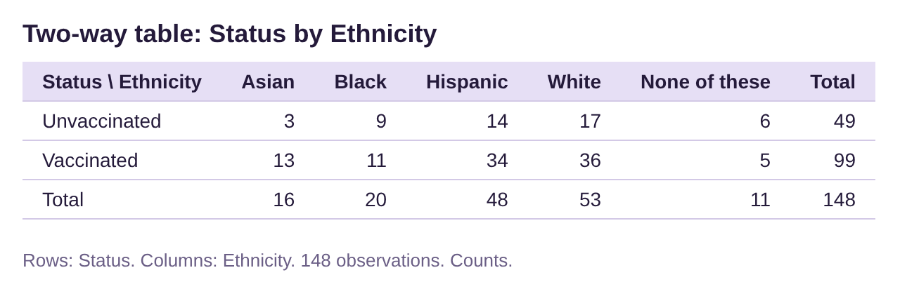
Figure 2.9: Contingency table for vaccination status.
The contingency table created by STATBELT Utility in figure 2.9 has a slightly different arrangement than the one we began with, but it carries the same information in addition to displaying the totals for each row and column.
Now, to create the side-by-side bar chart, follow Graphs → Bar graph. Choose “Ethnicity” for “Column” and select “Status” for the “Group by” option. Leave “Bar arrangement” as “Split bars (side by side)” and “Show” as “Raw data (counts),” and check “Show the value above each bar.” So the bars match the order of Table 3, choose “My own order (choose below)” for “Order of bars” and make sure “None of these” is at the bottom of the list. Then click “Open graph in a new window.”
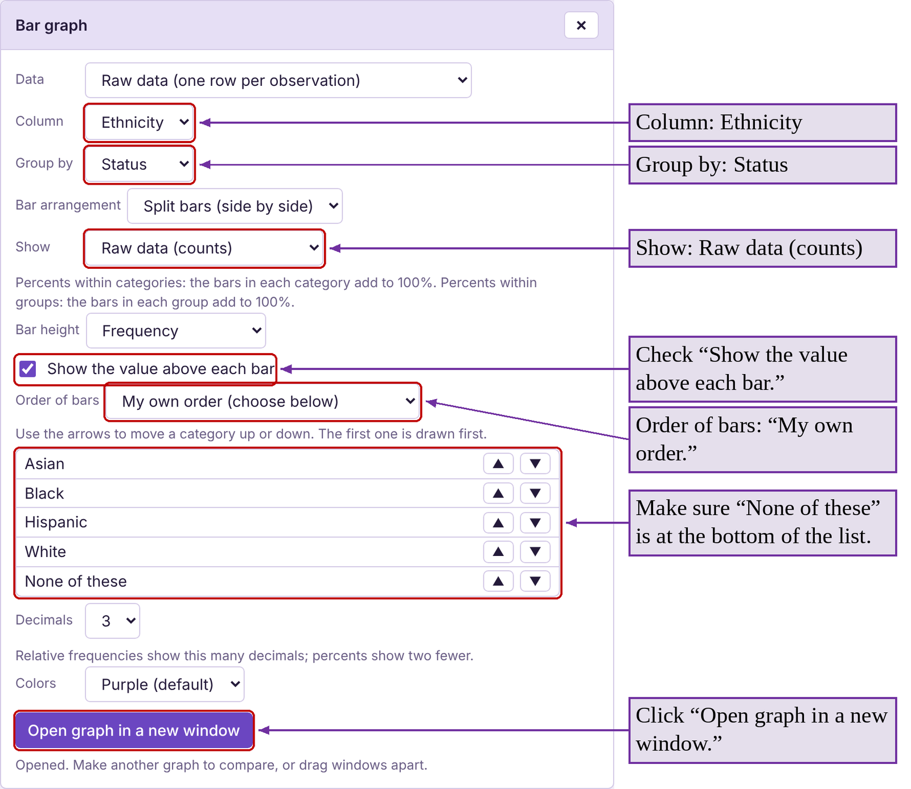
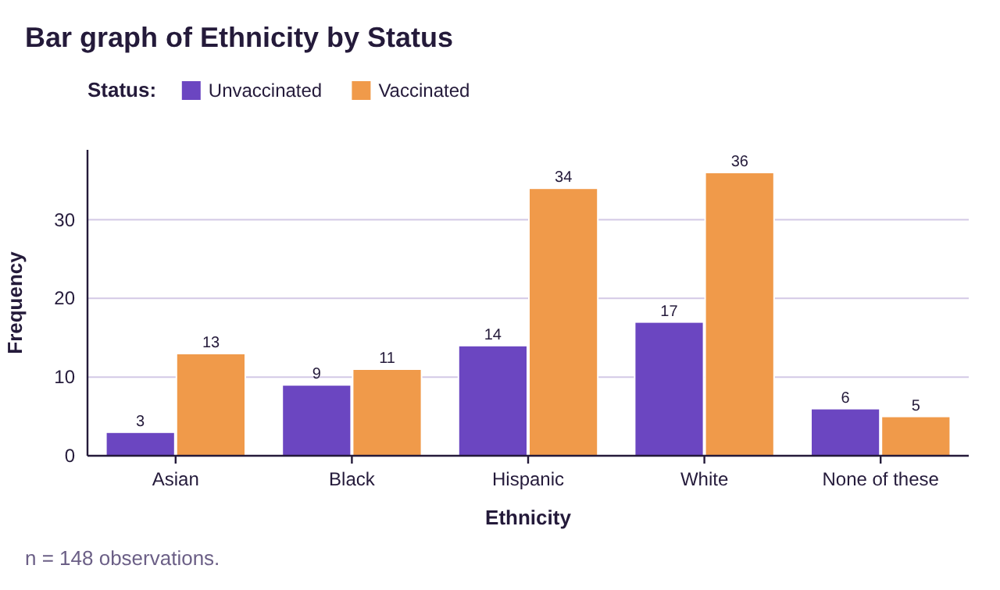
Figure 2.10: Side-by-side frequency bar graph for vaccination status and ethnicity.
This side-by-side bar graph in figure 2.10 shows us the frequency of vaccinated and unvaccinated individuals from each race or ethnicity. For example, 34 Hispanics were vaccinated while 14 were not. There were 36 White individuals who were vaccinated and 17 unvaccinated.
Photo by CDC (opens in a new tab) on Unsplash
If you look closely at figure 2.10, you might notice that the tallest bars are for White and Hispanic vaccinated individuals. But White and Hispanic individuals were also the tallest bars for the unvaccinated groups. That is because there were more White and Hispanic individuals in the survey than from the other groups. In fact, there were more unvaccinated White participants then there were vaccinated Asian participants. It would be accurate to say that there are more vaccinated White individuals than vaccinated Asian individuals (just look at the tallest bars!). But it’s also true that there were more unvaccinated White individuals than unvaccinated Asian individuals. Both are correct because the White participants outnumbered Asian participants in both categories, but it is confusing. To fairly compare the vaccination status of each ethnic group we will instead use relative frequency.
To compute the relative frequency of vaccination within each group, divide the number vaccinated by the total for that group. You can find the totals in the contingency table in figure 2.9 or compute them yourself.
Relative frequency for vaccinated Asian = 13/16=0.813 or 81.3%
Relative frequency for vaccinated “Black” = 11/20=0.55 or 55%
Relative frequency for vaccinated “Hispanic” = 34/48=0.708 or 70.8%
Relative frequency for vaccinated “White” = 36/53=0.679 or 67.9%
Relative frequency for vaccinated “None of these” = 5/11=0.455 or 45.5%
We can now see that although there were more vaccinated White and Hispanic individuals, they did not have the highest rate of vaccinations among their ethnic groups. Asians had the highest vaccination rate at 81.3%. Using relative frequency within groups allows us to fairly compensate for different group sizes.
Example 10: Vaccination data- Side-by-side with relative frequency
Use the data summarized in Table 3 to make a side-by-side bar graph using relative frequency within ethnic groups.
Solution:To do this, repeat the steps in example 9 to create the bar graph, but this time select “Percents within categories” for “Show.”
This will give the percent of each ethnic group that is vaccinated and the percent that is unvaccinated above the bars. The side-by-side bar graph is shown in figure 2.11.
Now we can clearly see that the group with the highest vaccination rate is Asian. We can also see that White and Hispanic are close, and the rate of vaccinations among Black people is slightly lower.
The data in this student survey mirrored the estimated population vaccination rates in the United States at the time of this writing. According to CDC data in April 2022, Asian Americans had the highest vaccination rate at 85%, followed by Hispanic at 65%, White at 63%, and Black at 57%. These figures were based on data collected from 38 states.
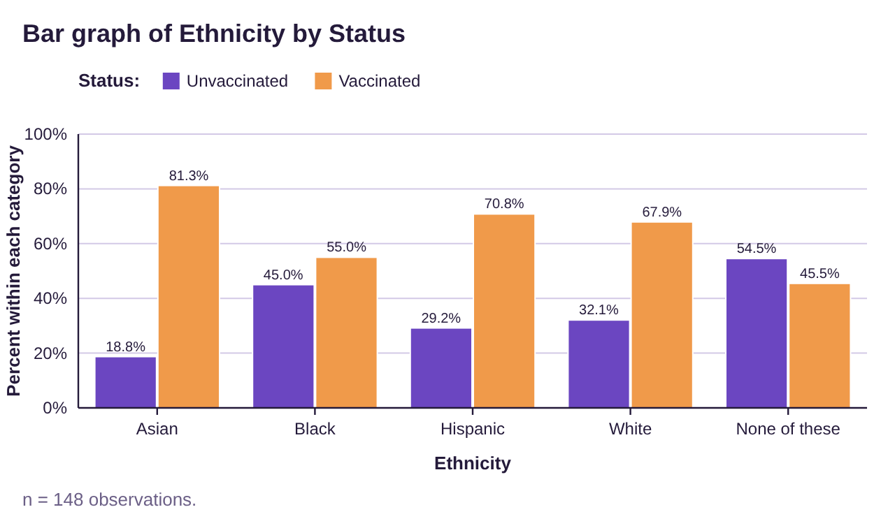
Figure 2.11: Side-by-side relative frequency bar graph for vaccination status and ethnicity.
Another option to visualize the percentage breakdown within each group is to use a stacked bar graph.
Example 11: Vaccination data- Stacked bar graph
Use the data summarized in Table 3 to make a stacked bar graph.
Solution:Repeat the steps for the side-by-side bar graph in example 10, but this time select “Stacked bars” for “Bar arrangement.” Leave “Show” as “Percents within categories.” The resulting graph is shown in figure 2.12. Each column represents one ethnicity, and the total height of each column is 100%. The relative size of the bars in the stack is what allows you to compare the vaccination rates of the different ethnic groups. The group with the largest orange bar is the group with the highest vaccination rate. The group with the largest purple portion of the bar has the lowest vaccination rate. The stacked bar graph gives the same information as the side-by-side bar graph but has a different look.
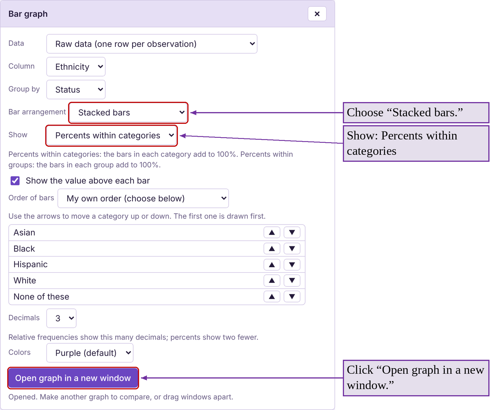
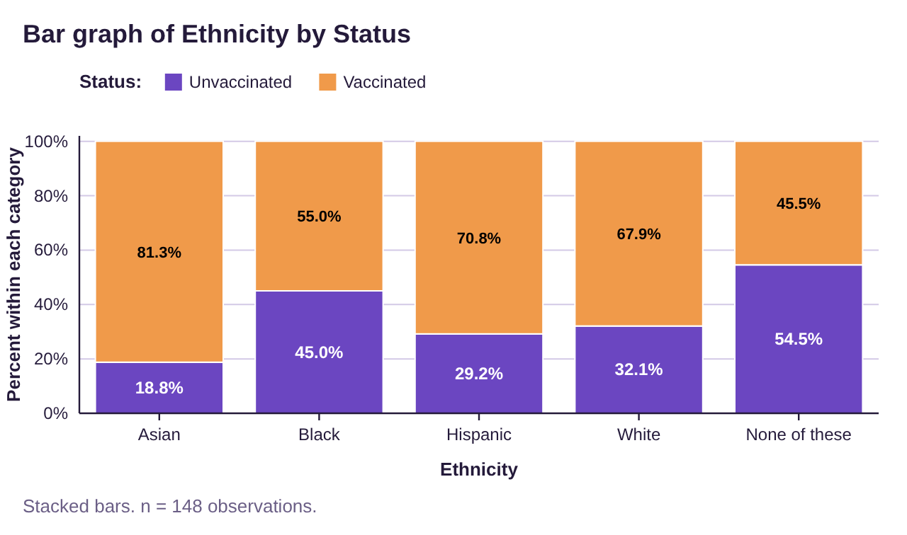
Figure 2.12: Stacked relative frequency bar graph for vaccination status and ethnicity.
One final note. Please remember that bar graphs, pareto charts, and pie graphs can only be used for qualitative data! If you have quantitative (numerical) data, whether it is discrete or continuous, we will need to use different procedures and graphs. That is the topic for section 2.2.

Important Point!
Bar graphs, pie charts, and Pareto charts can only be used for qualitative data! They cannot be used with quantitative (numerical) data.